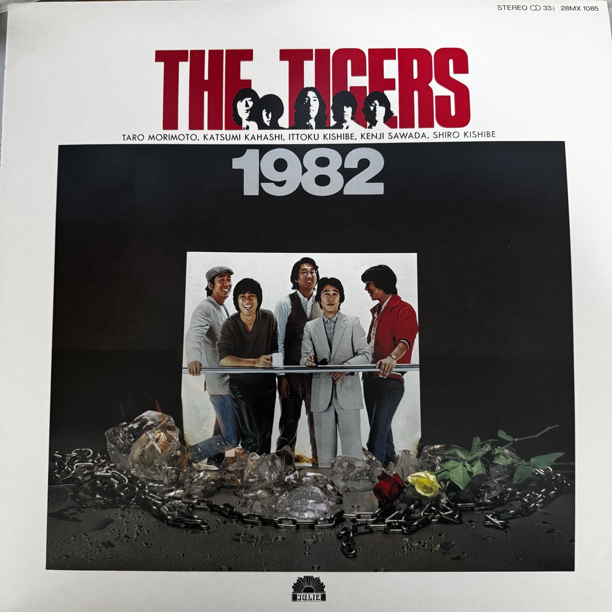

The Tigers
封套列出的五位成员是森本太郎、加橋かつみ、岸部一徳、沢田研二、岸部シロー。乐团于 1967 年出道，是日本 Group Sounds（常简称 GS）的代表之一。这张重聚时期的专辑把六十年代乐团的故事带进了八十年代。
ザ・タイガース
六十年代日本 Group Sounds 浪潮中的一支代表乐团，在解散多年后重聚录下这张专辑。开篇《十年ロマンス》回望过去；翻面后，童年誓言、口号式副歌和异乡夜色，最后都走到《朝焼けのカンタータ》的清晨。
按唱片顺序开始听 ↓
封套列出的五位成员是森本太郎、加橋かつみ、岸部一徳、沢田研二、岸部シロー。乐团于 1967 年出道，是日本 Group Sounds（常简称 GS）的代表之一。这张重聚时期的专辑把六十年代乐团的故事带进了八十年代。
沢田研二作曲六首，包括《十年ロマンス》和《BA-BA-BANG》；森本太郎作曲三首，包括开阔的《新世界》和全盘尾曲；加橋かつみ独立包办三首的词曲。阿久悠、橋本淳、糸井重里、山上路夫等人也为本辑填词。
伊藤銀次参与全部十二首的编曲，其中六首与すぎやまこういち共同署名。すぎやま也参与过乐团早期作品；他在这里的署名，是六十年代与这次重聚之间的一条联系。
词、曲、编曲和标示时长来自曲目页。展开正在播的一面，每首先看一行听点，再顺着主歌、副歌、人声和反复的句子听。
词：阿久悠 · 曲：沢田研二 · 编曲：伊藤銀次、すぎやまこういち
听「从前」怎样回到现在
开头把英语的故事开场白和日语叙述并在一起，结尾又回到这个框架。先记住开场的语气，等它在最后回来：经过中间关于十年与旧日恋情的追问，同一个开头听起来会多一层回望。放在重聚专辑第一首，也像乐团在回望自己。
词：橋本淳 · 曲：森本太郎 · 编曲：伊藤銀次、すぎやまこういち
听追问怎样转成呼唤
开头的句子不断发问，接着歌词把视线带向远方；反复出现的直接呼唤，则把镜头拉回到「你」。听两种句型的落点：一边向外打开，一边把距离收近。与上一首回望十年并排听，这首更像要出发。
词：山川啓介 · 曲：沢田研二 · 编曲：伊藤銀次
听英语反复如何成为记忆点
先抓住开头反复的英文请求，再听日语段落如何把它变成一段有对象、有往事的叙述。后来另一句英语反复加入，把重心从「再一次」转到「唯有你」。每次英文回来，留意同一旋律落点在新一段叙述后带来的情绪变化。
词：加橋かつみ · 曲：加橋かつみ · 编曲：伊藤銀次、すぎやまこういち
听反复里的留白
加橋同时写词作曲，歌词里季节和景物已经在变化，反复回来的句子却仍停留在旧日感情里。听到段落末尾时，留意人声怎样处理重复的字句、怎样把空隙留给伴奏。末段终于有风和梦穿过窗户的意象，再听它与此前的停留感有何不同。
词：糸井重里 · 曲：沢田研二 · 编曲：伊藤銀次
听嗓音怎样变成打击乐
先跟着重复的拟声节奏打拍，再听英语招呼怎样把一首歌变成仿佛在台上向观众喊话。这里最容易跟上的东西是字音的弹跳和重音，甚至可以先不管词义。和下一首连听，特别能听出从面向人群到回到个人记忆的转向。
词：加橋かつみ · 曲：加橋かつみ · 编曲：伊藤銀次
听「梦之城」如何一次次回来
歌里先辨认旧地和街角，又把视线移向曾经一起望过的夜空，最后还有风和黎明。抓住各段末尾回到题名的地方：文字一直换景，反复的落点却把它们拢在一起。作为 A 面最后一首，适合听完尾声再翻面。
词：山上路夫 · 曲：沢田研二 · 编曲：伊藤銀次、すぎやまこういち
听一件旧事怎样被现在改写
歌词先说童年的约定，再把同一个地点放到长大以后的现实里。先跟着主唱听清叙事，再找歌里反复回想的那个夏日：相同的意象从承诺变成了记忆。它是盘上标时最长的一首，给了这段故事较多展开空间。
词：近田春夫 · 曲：沢田研二 · 编曲：伊藤銀次
跟着标题的辅音打拍
这里的英语词组很像节奏口令，标题的爆破音本身就能当一记重拍。听它怎样从成串的喊句转入较长的日语句子，然后又回到短促反复。刚听完 B 面开场的叙事曲，可以直接比较这两首靠什么抓住耳朵。
词：安井かずみ · 曲：沢田研二 · 编曲：伊藤銀次
听人名与地名组成的回环
开头就把「ライラ」和伊斯坦布尔放在一起反复；主歌才慢慢展开人物、夜色和旅途。先记住这组声音的轮廓，等它再次出现，听它如何把不断移动的场景拉回同一个名字。与前一首对照，两首都靠反复抓耳，这首的反复还在标记地点和人物。
词：加橋かつみ · 曲：加橋かつみ · 编曲：伊藤銀次、すぎやまこういち
听从风景到一句直白的感叹
开头的星光、海浪和风景先把空间铺开，题名则把这些画面收进一句容易记住的话。听主歌走到题名时，留意字句的长度和旋律落点是否一起改变。再与同样由加橋包办词曲的《夢の街》对听：一首借题名回到记忆，一首借题名抒发当下。
词：小泉長一郎 · 曲：森本太郎 · 编曲：伊藤銀次
听副歌怎样改变视线
日语段落里有窗、雨与远处的天空；英文题名每次回来，都像在把视线重新抬高。试着跟唱这个短句，再听它和较长的日语句之间的疏密差。它是 B 面最短的一首，重复的英语句很快就立起了辨识度。
词：滝御夏子 · 曲：森本太郎 · 编曲：伊藤銀次、すぎやまこういち
听专辑怎样在清晨收束
从第一首的「从前」一路听到这里，最后一首把时间推到朝霞与早晨。留意日常物件和晨光的细节怎样逐步通向反复的尾句；若和前一首连听，可以感到视线从仰望天空转回身边。题名借用了「康塔塔」这个词，这里可以把它理解成给清晨的一首歌。
正面的红字和当时的五人合照，与背面的黄字和冰块前的旧照相呼应。背面底部标有日本 Polydor 制造发行及 ¥2,800 定价；黑底曲目页列出两面的完整词曲与编曲署名。